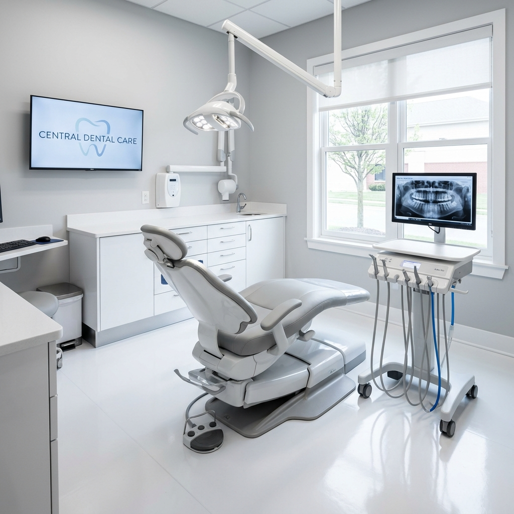
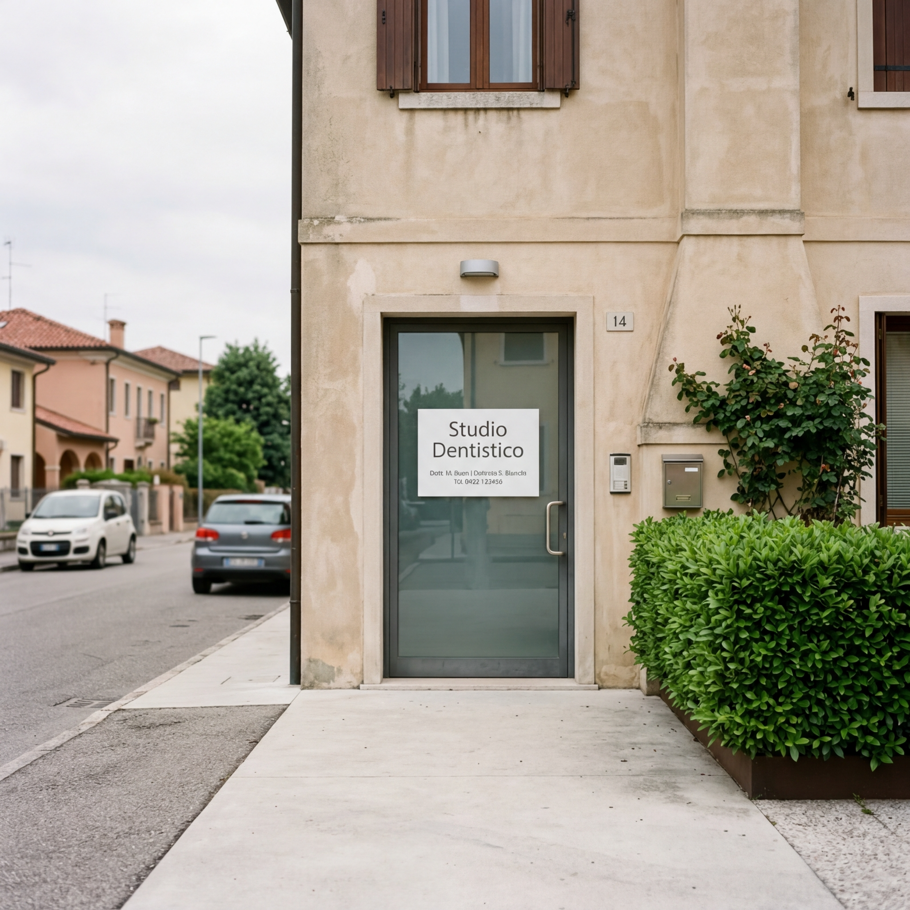

Chi siamo
Un centro odontoiatrico di riferimento per Padova e l'area metropolitana.
Un centro odontoiatrico di riferimento per Padova e l'area metropolitana.

Il centro
Il Centro Dentale Toti è uno studio odontoiatrico situato nel quartiere Arcella di Padova, in una moderna palazzina facilmente accessibile con ascensore e parcheggio nelle vicinanze. Fondato da Andrea Boaretto e Roberto Pegoraro, il centro riunisce un team di odontoiatri specializzati e personale qualificato che partecipa regolarmente a corsi di aggiornamento.
Lo studio è organizzato per coprire le principali branche dell'odontoiatria: implantologia, ortodonzia, conservativa, endodonzia, igiene e prevenzione, parodontologia, chirurgia orale ed estetica dentale. Un elemento distintivo è la presenza di un laboratorio odontotecnico interno ("Immagine Dentale"), che consente la produzione diretta di protesi, corone e manufatti ortodontici con un controllo costante sulla qualità e tempi di consegna ridotti.
Il centro è convenzionato con il fondo sanitario Sani.In.Veneto e crede in un'odontoiatria basata sull'ascolto, sulla trasparenza del piano di trattamento e sulla qualità dei materiali utilizzati.
Il nostro team
Odontoiatra. Si occupa di odontoiatria generale, conservativa, endodonzia e implantologia presso il Centro Dentale Toti.
Odontoiatra. Collabora con il centro nell'ambito dell'odontoiatria generale, della prevenzione e dei trattamenti estetici.
Odontoiatra specializzata in ortodonzia. Si occupa della correzione delle malocclusioni con apparecchi tradizionali e allineatori trasparenti per adulti e ragazzi.
I nostri valori
Ogni piano di cura viene spiegato in modo chiaro. Nessun trattamento inizia senza il tuo consenso informato.
Il nostro laboratorio odontotecnico interno garantisce manufatti di qualità controllata e tempi di realizzazione ridotti.
Dedichiamo tempo all'ascolto delle tue preoccupazioni, perché la fiducia è la base di ogni cura efficace.
Partecipazione costante a corsi di aggiornamento per offrire trattamenti basati sulle migliori evidenze scientifiche.
Aggiornamento professionale
Lo spazio dedicato ai corsi di aggiornamento, alle certificazioni e agli attestati del team del Centro Dentale Toti.
Questa sezione verrà completata con i dettagli dei corsi di formazione, le certificazioni professionali e gli attestati di aggiornamento del team.
Il centro



